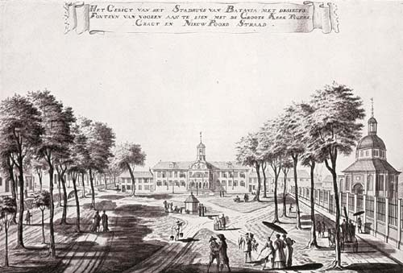

The north coast area of western Java including Jakarta was the location of prehistoric Buni culture that flourished from 400 BC to 100 AD.[24] The area in and around modern Jakarta was part of the 4th-century Sundanese kingdom of Tarumanagara, one of the oldest Hindu kingdoms in Indonesia.[25] The area of North Jakarta around Tugu became a populated settlement in the early 5th century. The Tugu inscription (probably written around 417 AD) discovered in Batutumbuh hamlet, Tugu village, Koja, North Jakarta, mentions that King Purnawarman of Tarumanagara undertook hydraulic projects; the irrigation and water drainage project of the Chandrabhaga river and the Gomati river near his capital.[26] Following the decline of Tarumanagara, its territories, including the Jakarta area, became part of the Hindu Kingdom of Sunda. From the 7th to the early 13th century, the port of Sunda was under the Srivijaya maritime empire. According to the Chinese source, Chu-fan-chi, written circa 1225, Chou Ju-kua reported in the early 13th century that Srivijaya still ruled Sumatra, the Malay peninsula, and western Java (Sunda).[27] The source says the port of Sunda was strategic and thriving, mentioning pepper from Sunda as among the best in quality. The people worked in agriculture, and their houses were built on wooden piles.[28] The harbour area became known as Sunda Kelapa (Sundanese: ᮞᮥᮔ᮪ᮓ ᮊᮨᮜᮕ) and by the 14th century, it was an important trading port for the Sunda Kingdom.
The first European fleet, four Portuguese ships from Malacca, arrived in 1513 while looking for a route to obtain spices.[29] The Sunda Kingdom made an alliance treaty with the Portuguese by allowing them to build a port in 1522 to defend against the rising power of the Demak Sultanate from central Java.[20] In 1527, Fatahillah, a Pasai-born military commander of Demak attacked and conquered Sunda Kelapa, driving out the Portuguese. Sunda Kelapa was renamed Jayakarta,[20] and became a fiefdom of the Banten Sultanate, which became a major Southeast Asian trading centre.
Through the relationship with Prince Jayawikarta of the Banten Sultanate, Dutch ships arrived in 1596. In 1602, an English East India Company (EIC) voyage led by Sir James Lancaster arrived in Aceh and sailed on to Banten, where they were allowed to build a trading post. This site became the centre of English trade in the Indonesian archipelago until 1682.[30] Jayawikarta is thought to have made trading connections with the English merchants, who were rivals with the Dutch, by allowing them to build houses directly across from the Dutch buildings in 1615.[29]

When relations between Prince Jayawikarta and the Dutch deteriorated, his soldiers attacked the Dutch fortress. His army and their EIC allies, however, were defeated by the Dutch, in part owing to the timely arrival of Jan Pieterszoon Coen. The Dutch burned the EIC trading post and forced them to retreat to their ships. The victory consolidated Dutch power, and they renamed the city Batavia in 1619.[citation needed]
Commercial opportunities in the city attracted native and especially Chinese and Arab immigrants. This sudden population increase created burdens on the city. Tensions grew as the colonial government tried to restrict Chinese migration through deportations. Following a revolt, 5,000 Chinese were massacred by the Dutch and natives on 9 October 1740, and the following year, Chinese inhabitants were moved to Glodok outside the city walls.[31] At the beginning of the 19th century, around 400 Arabs and Moors lived in Batavia, a number that changed little during the following decades. Among the commodities traded were fabrics, mainly imported cotton, batik and clothing worn by Arab communities.[32]
The city began to expand further south as epidemics in 1835 and 1870 forced residents to move away from the port. The Koningsplein, now Merdeka Square was completed in 1818, the housing park of Menteng was started in 1913,[33] and Kebayoran Baru was the last Dutch-built residential area.[31] By 1930, Batavia had more than 500,000 inhabitants,[34] including 37,067 Europeans.[35] The city was expanded in 1935 through the annexation of the town of Meester Cornelis, modern Jatinegara.[36]
On 5 March 1942, the Japanese captured Batavia from Dutch control, and the city was named Jakarta (Jakarta Special City (ジャカルタ特別市, Jakaruta tokubetsu-shi), under the special status that was assigned to the city). After the war, the Dutch name Batavia was internationally recognised until full Indonesian independence on 27 December 1949. The city, now renamed Jakarta, was officially proclaimed the national capital of Indonesia.
After World War II ended, Indonesian nationalists declared independence on 17 August 1945,[37] and the government of Jakarta City was changed into the Jakarta National Administration in the following month. During the Indonesian National Revolution, Indonesian republicans withdrew from Allied-occupied Jakarta and established their capital in Yogyakarta.
After securing full independence, Jakarta again became the national capital in 1950.[31] With Jakarta selected to host the 1962 Asian Games, Sukarno, envisaging Jakarta as a great international city, instigated large government-funded projects with openly nationalistic and modernist architecture.[38] Projects included a cloverleaf interchange, a major boulevard (Jalan MH Thamrin-Sudirman), monuments such as The National Monument, Hotel Indonesia, a shopping centre, and a new building intended to be the headquarters of CONEFO. In October 1965, Jakarta was the site of an abortive coup attempt in which six top generals were killed, precipitating a violent anti-communist purge which killed at least 500,000 people, including some ethnic Chinese.[39] The event marked the beginning of Suharto's New Order. The first government was led by a mayor until the end of 1960 when the office was changed to that of a governor. The last mayor of Jakarta was Soediro until he was replaced by Soemarno Sosroatmodjo as governor.
In 1966, Jakarta was declared a 'special capital region' (Daerah Khusus Ibukota), with a status equivalent to that of a province separated from West Java.[40] Based on law No. 5 of 1974 relating to regional governments, the Jakarta Special Capital Region was confirmed as the capital of Indonesia and one of the country's then 26 provinces.[41] Lieutenant General Ali Sadikin served as governor from 1966 to 1977; he rehabilitated roads and bridges, encouraged the arts, and built hospitals and a large number of schools. He cleared out slum dwellers for new development projects — some for the benefit of the Suharto family,[42]— and attempted to eliminate rickshaws and ban street vendors. He began control of migration to the city to stem overcrowding and poverty.[43] Foreign investment contributed to a real estate boom that transformed the face of Jakarta.[44] The boom ended with the 1997 Asian financial crisis, putting Jakarta at the centre of violence, protest, and political manoeuvring.
After three decades in power, support for President Suharto began to wane. Tensions peaked when four students were shot dead at Trisakti University by security forces. Four days of riots and violence in 1998 ensued that killed an estimated 1,200, and destroyed or damaged 6,000 buildings, forcing Suharto to resign.[45] Much of the rioting targeted Chinese Indonesians.[46] In the post-Suharto era, Jakarta has remained the focal point of democratic change in Indonesia.[47] Jemaah Islamiyah-connected bombings occurred almost annually in the city between 2000 and 2005,[31] with another in 2009.[48] In August 2007, Jakarta held its first-ever election to choose a governor as part of a nationwide decentralisation program that allows direct local elections in several areas. Previously, governors were elected by the city's legislative body.[49]
During the Jokowi presidency, the Government adopted a plan to move Indonesia's capital to Nusantara after 17 August 2024,[50] but this has not occurred due to delays.[51]
Between 2016 and 2017, a series of terrorist attacks rocked Jakarta with scenes of multiple suicide bombings and gunfire. Abu Bakr al-Baghdadi claimed responsibility for the attacks on behalf of Islamic State.